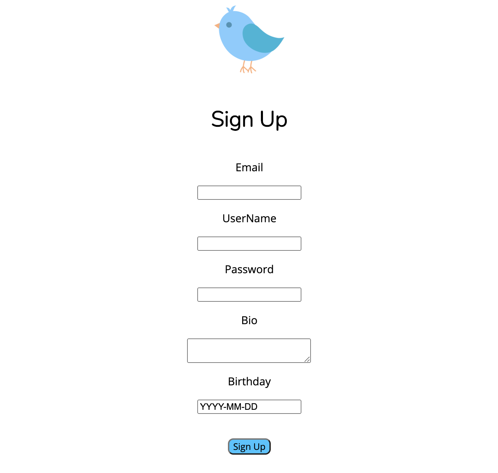

A Twitter Clone
This is the second project I worked on. It was broken into two parts. The first being the front end. Here I learned VueJS for the first time as well as how to interact with a web API. To see the front end code press here.
The second half of this project was the backend code. Here we had to recreate the web API we interacted with during the first half of the project. During the backend work I was introduced to both Python and SQL for the first time. To see the backend code press here.
This project as a whole was extremely exciting to build. It became my first full stack application and showed me just a glimpse of the power that the languages I was learning had. The moment when the backend code was finished and I was able to combine the two into a fully functioning website was one of the most satisfying feelings I ever felt. To see the live site please press here.